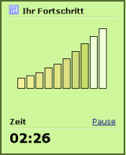

Überwachen der Genauigkeit
Da eine hohe Genauigkeit die Grundlage für professionelle Schreibleistungen darstellt, besitzen alle Übungen ein Genauigkeitsziel. TypingMaster überprüft,
ob Sie dieses Ziel erreichen und gibt Ihnen dazu nach jeder Übung eine Rückmeldung.
Überwachen der Schreibgeschwindigkeit
Gleichzeitig überwacht TypingMaster regelmäßig Ihre Schreibgeschwindigkeit. Je schneller Sie schreiben, desto schneller können Sie eine Übung beenden -
vorausgesetzt, Sie erreichen das Genauigkeitsziel. Beachten Sie aber bitte, dass Sie eine Übung zu Ende schreiben sollten, solange
Ihre Schreibgeschwindigkeit unter 80 TPM beträgt.